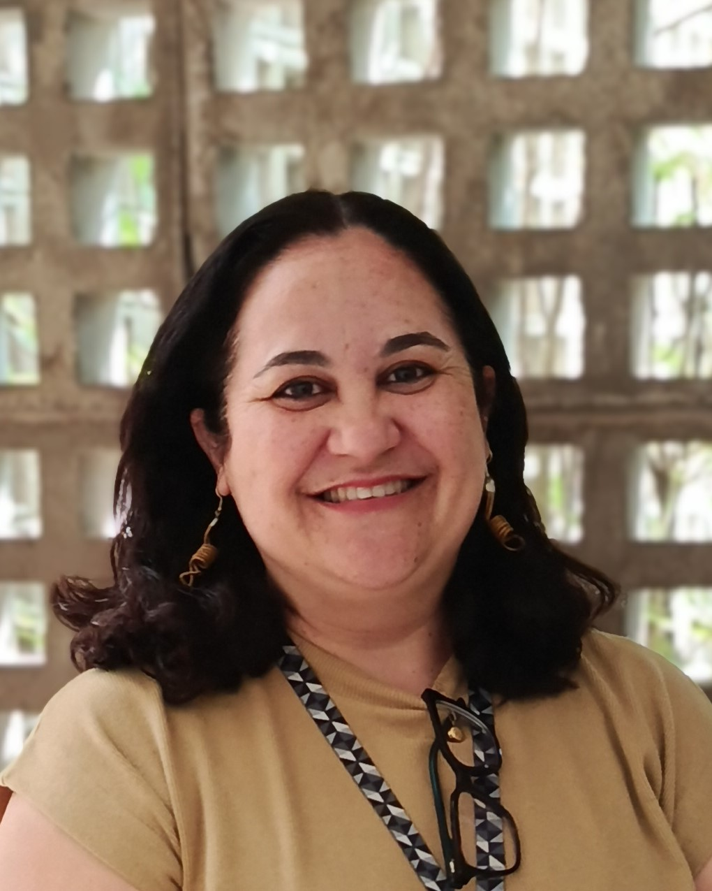

Edna Cristina Lira Matos Gomes
Da Metrópole à Sala de Aula: A Trajetória de Transformação da Professora Edna
Quem conversa com a professora de Geografia Edna Cristina Lira Matos Gomes logo percebe a orgulhosa conexão que ela mantém com a sua história. Quando fala sobre o próprio nome, ela faz questão de frisar cada sobrenome para resgatar suas origens e a miscigenação de sua família. "É para saber de onde eu vim", ressalta.
Vinda de uma família periférica de Osasco, na Região Metropolitana de São Paulo — lugar que carinhosamente chama de "mundo de Oz" e para onde faz questão de voltar todos os anos para manter os pés no chão —, Edna construiu um caminho marcado por coragem e ousadia.
Sua trajetória profissional começou cedo, aos 14 anos, como assistente em um escritório de advocacia. A experiência a motivou a cursar a faculdade de Direito, permitindo que ingressasse no mercado financeiro, onde construiu uma carreira sólida ao longo de 12 anos. Mais tarde, aventurou-se no empreendedorismo abrindo um café com amigas e retornou ao setor bancário, período em que viveu a maternidade com a chegada da filha, Manuela.
Com a mudança para o interior de São Paulo, a distância do trabalho e a ausência de uma rede de apoio, Edna decidiu dedicar-se à família por um período. Foi nessa pausa que o antigo sonho de ensinar ganhou força. Dividida entre Letras e Geografia, optou pela Geografia e encarou o desafio de recomeçar após os 30 anos.
"Quando migrei realmente para a área da educação, isso mudou. Consegui não sentir mais esse vazio. E esse preenchimento se dá por conta de você estar ativo, de conseguir proporcionar algo para a sociedade, ter um significado de transformação. Eu me coloquei a serviço da minha comunidade." — Prof. Edna, sobre a transição para a sala de aula
Atuando no SESI desde o 6º ano do Ensino Fundamental até o 3º ano do Ensino Médio, Edna destaca que o que mais ama é a conexão genuína com os alunos. Para ela, educar é um ato contínuo de semear sem a ansiedade imediata da colheita.
"Põe a semente na terra e ela não será em vão. Trabalhar na educação é semear e não se preocupar, porque mais cedo ou mais tarde essa semente vai dar frutos."
Nas suas aulas, busca desmistificar a Geografia de livro didático, promovendo o cuidado com o planeta e com o outro. Essa postura se traduz até na saudação de encerramento de suas aulas:
Por trás de sua força há uma rede de apoio feminina fundamental: a avó Odete (uma mulher forte e à frente de seu tempo), a mãe Maria (sensibilidade e delicadeza) e as irmãs Elisângela e Elisabete (seus pilares), além da filha Manuela e de suas alunas em sala de aula.
Mesmo ciente dos imensos desafios da profissão no Brasil, Edna garante que desistir nunca foi uma opção: "Enquanto força e coragem eu tiver, estarei aqui, firme e forte".